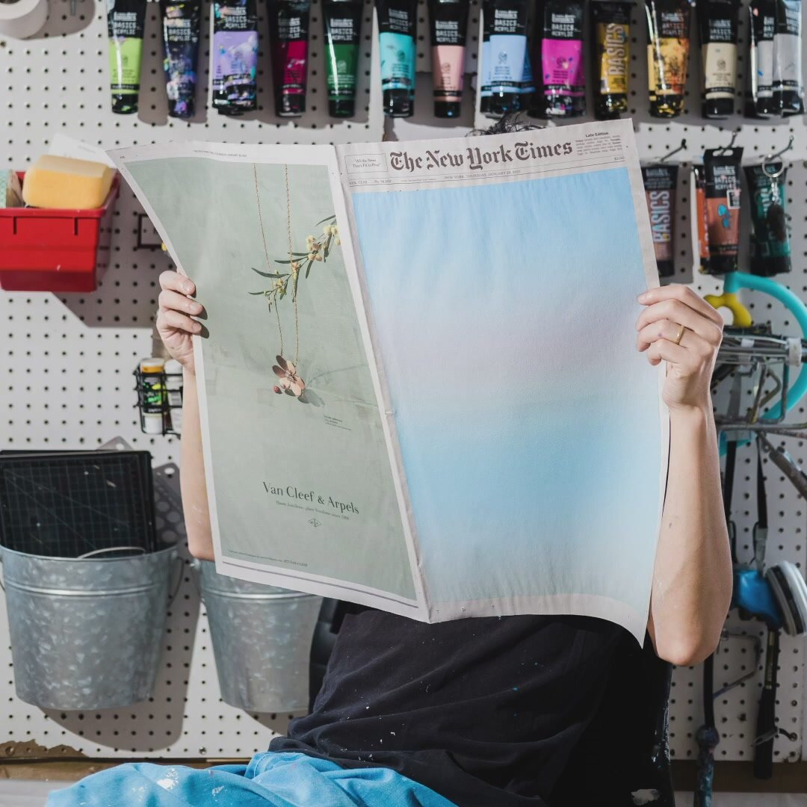

SUNRISE FROM A SMALL WINDOW

Sho Shibuya’s New York Times paintings from 2020 interpret the chaos of the world and the beauty of each sunrise as an alternate, artistic historical record. From the start of lockdown, he began painting the sky from his Brooklyn apartment window as a daily meditation; using the front page of the newspaper for the first time as the country neared 100,000 deaths. Over months, gradient colour washes are punctuated by key dates that he interprets more graphically, with the series ending as Joe Biden gets elected president of the United States. Each composition is a personal expression, both escapist and all too real.